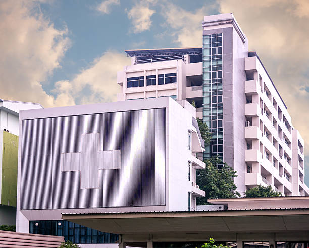

في قلب صنعاء - همدان، نلتزم بتقديم أعلى معايير الجودة الطبية تحت سقف واحد.

منذ تأسيسنا، وضعنا نصب أعيننا أن نكون الوجهة الطبية الأولى في منطقة إبلاس بهمدان، نقدم تجربة استشفائية متكاملة تعتمد على نخبة من الأطباء وأحدث الأجهزة.

فحص النظر بأحدث الكمبيوترات وتوفير كافة أنواع العدسات.

تشخيص دقيق لأمراض القلب والسكري بأحدث التقنيات.

رعاية شاملة للحوامل وولادة طبيعية وقيصرية آمنة.

نتائج دقيقة وسريعة لكافة الفحوصات بأجهزة آلية حديثة.

عمليات جراحية دقيقة وتفتيت الحصوات بالليزر والمناظير.

تصوير تلفزيوني (Ultrasound) وأشعة سينية متطورة.

أخصائية باطنة وقلب

أخصائي مسالك بولية

أخصائية نساء وولادة

تاريخ أول يوم لآخر دورة شهرية: